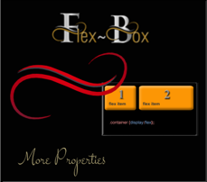

~3 More Flex-Box Properties ~
2/5/2024
Table of Contents
The wrap property with gap and >*
Understanding the flex-grow, flex-shrink and flex basis

Parent -Child Relationship
With Flex-box you are working with a parent (the container) and the child or children (individual div or elements in the container). You always want to throw your children into the parent. The parent will have the flex property attached to it; the children will not have the flex property attached to it. They just flex because their parent told them to.
Now for some examples:
Simple centering
Go here to find code
Flex Direction
Instead of using display, as the property for the container, we could change it to flex. The flex-direction takes a few attributes. Think of the flex container as something that will lay out its elements in either a horizontal, or a vertical direction. In other words, in either a row, or a column.
So, we can use row, or column. But then flex wants to give us just a bit more, and throws in a way in which we can reverse the items that we specify for each one of them so, we can do this:
- row (default)
- row-reverse
- column
- column-reverse
Since row is the default, let’s try using one of these techniques and set the flex-direction to be column, and see how that works. As we work further in this tutorial, we will be working on putting some space between those boxes.
You might want to add some height to the containers so the column doesn’t look stuck to the bottom of the page.
Go here for the HTML and CSS code for flex-direction:column
What does > * mean when working with flexbox?
The > sign indicates that the container wants to talk to its children. So, when you see a > think listen up kids I am talking to you. In this case the container is talking to all of the div tags it has inside of it. In this case the kids have a class of .box.
Now the star * after the > sign means that the parent wants to talk to ALL of its children. So, in this case in the CSS, we are writing code that all of the kids, or div.boxes have to adhere to.
The wrap property, with Gap and >*
I needed to explain that >* because the wrap property, all though useful can be quite a finicky fella.
The wrap property
You will find that by default when you set the container to flex, everything will try to fit on the same row, but that isn’t exactly the behavior that you might want, sometime you want your boxes to wrap around. Go here to learn about the gap property, here to learn about the justify-content property, and here to learn about what those numbers mean after the >*.
You put the flex-wrap on the container. It has 3 different settings.
- nowrap (default) all items on same line
- wrap: will wrap around top to bottom
- wrap-reverse: will wrap around bottom to top
The 4 illustrations below will show what the boxes will do when you narrow the screen on your web page. Try the properties out on your own to actually see them in action.

Gap Property
The gap property is what we can use to put the space in-between the boxes. This can be set to any thing that you want, but I just set mine to be 5 px. It doesn’t add any space around the outside edges of the boxes. The space is only given to the interior of the grid of boxes. The first thing you will need to do is to set your container to flex.
.container {
display: flex;
}
You can add any one of the 4 settings below underneath where you set the display: flex; inside the code for the container. So, you can set the container gap to be any of the following. The size of the gap is up to you. As you can see, the first one will set a gap for row and gap all in one setting, if you want the row and the column to be different settings, you would use the second example below. Or, you could just set the row and column separately as demonstrated in the last two lines of code.
Go here to view the HTML and CSS for the Justify-content:space-between | gap |flex-wrap
Justify Content
The justify-content is what you would use when you want to define the alinement of your boxes along the main axis. You would put this on the parent element, or in our case the .container. It has 6 different settings. Some browsers are not in full compliance with this property just yet, but for the most part, you can use it.
- Flex-start
- Flex-end
- Center
- Space-between
- Space-around
- Space-evenly
Watch it, if you are finding that your code might not be listening to you when you want your boxes to move around on the page, look closely at all of your code. You might have something written that specifically tells your boxes to be doing something else, like the first setting that we made in this tutorial. If you have centered your boxes, and forgot to remove that code, then your boxes will just ignore you.
Also make sure any media queries come last in your CSS code page, or your styling will also try to ignore you.
Justify content:flex end
In order to make this work, we will have to remove that auto setting on the margin, because that will just center everything.
Space-between
If you use space-between the space in-between each box will become either wider or narrower, depending on the width of the page.
Go here to view the code for Justify-content: flex-end
Go here to view the code for justify-content: space-between
The difference between justify-content and align -items
Justify-content controls all of the items that are placed on the main axis, align-items will control all of the items on the cross axis. So, the difference between moving items right, and left, and up and down, on your web page.
Align Items
The align-items property will decide the behavior of how items are arranged on the cross axis.
- flex-start
- flex-end
- center
- baseline
- first baseline
- last baseline
- start
- end
- self-start
- self-end
- +… safe | unsafe;
Again, you will be adding this property to the container or parent object.
The code for the above is just a bit more complicated because none of the browsers seem to want to play nice with it, so we have to make code to accommodate a lot of them. To see the code for the html and CSS you can go here.
Align Items example 2
Align-Items is a way in which you can align elements on the cross axis. This would be the up-down or vertical alignment.
Go here to see the HTML and CSS for align-Items: center
Now look at the CSS, where we used the >* remember by using this on the style rule, we are able to target all of the div’s (children) inside of the container which is the parent. We also used a flex of 1. Setting it to flex: 1 means that it will shrink by a size of 1, but that the other two setting of flex-grow, flex-shrink and flex basis will remain at it default setting. You can go here to read what all of these settings actually mean.

Understanding the flex-grow, flex-shrink and flex basis
You may have noticed in an example on our external webpage and also on a previous example shown closer to the beginning of this tutorial, that we used some numbers after the shorthand of >* to talk to the children of the container. Here I will explain what those numbers mean.
The child div’s of the container will come with some default properties. We may not see them, but they are there. This doesn’t mean that we can not overwrite them if we wanted to do so. One such property is the:
flex: 0 1 auto
This is the default flex value. These numbers are a sort of shorthand, and what they are doing is setting 3 values at the same time.
You can think of this rule like this:
.child {
flex: [flex-grow] [flex-shrink] [flex-basis];
}
/* or... */
.child {
flex: [max] [min] [ideal size];
}
So, when we set our first setting to 0, we are telling flex that we do not want our div’s to grow any larger, that 2nd setting is how much we want our divs to shrink. Since we want it to be responsive and shrink for something like a cell phone size, this setting is specified as 1. Then our final setting is what our idea size for this div would be. As you can imagine, you can change these numbers, and the one that you might want to change the majority of the time would be your idea size for your div. And as I said, that would be your last setting.
In the example, on our external page here, I wrote out the full code for the grow, shrink and basis property, but flex actually would prefer you to use shorthand. So, you should do your work to look more like this:

Now to see this one in action you will want to stretch out your page and bring it back to a cell phone size. The illustration below is just an image, you need to play with these settings yourself, to see what they do.
You can use these settings that you can find here for grow| shrink | basis for starters
Order

The last property that we will be looking at will be the order property. By default, what ever way that you lay out your divs in your HTML will be the way that your layout will be, but you can change that to have your divs be laid out on your page in a different way then what you have in your HTML code. And this little behavior can be a bit of fun.
You can find the html and CSS code for order here